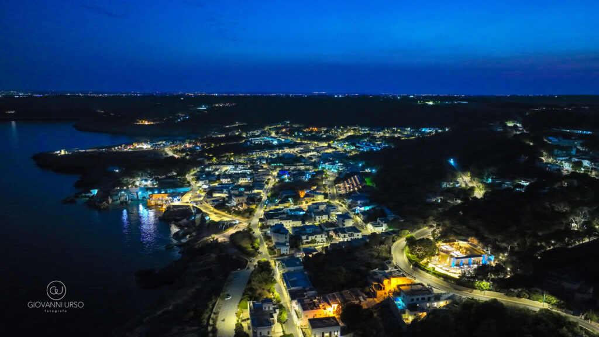
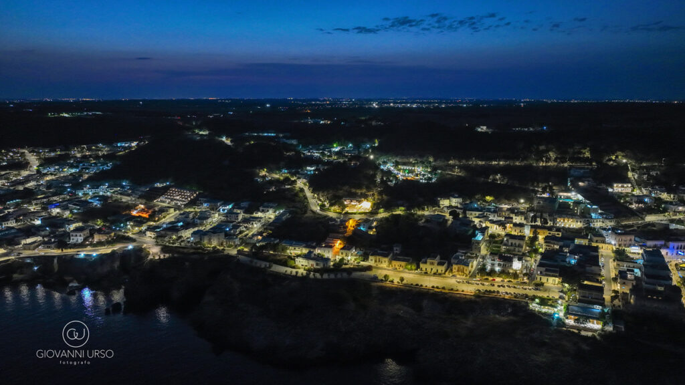

Esistono luoghi nel mondo in cui il tempo sembra fermarsi e la bellezza diventa silenziosa. Santa Cesarea Terme, sulla costa adriatica del Salento, è uno di questi. Le sue acque termali, le scogliere a picco sul mare e l'architettura orientale delle ville storiche la rendono una scenografia unica al mondo — e uno dei posti più belli dove si possa mai celebrare un matrimonio.
Un Paradiso tra Mare e Storia
Santa Cesarea Terme è conosciuta per le sue proprietà termali, per le scogliere che si tuffano nel mare Adriatico e per il fascino senza tempo delle sue ville in stile moresco. In ogni angolo del borgo si respira una qualità rara: quella di un luogo che sa essere spettacolare senza bisogno di artifici.
Per chi sogna un matrimonio che unisca il paesaggio naturale alla storia millenaria del Salento, Santa Cesarea Terme rappresenta la scelta più autentica. Non è solo una location — è un'esperienza che si porta dentro per sempre.
Perché Scegliere Cala dei Balcani
Tra le strutture esclusive di Santa Cesarea Terme, Cala dei Balcani si distingue per la sua posizione unica sulle scogliere e per un'offerta pensata interamente per un solo evento per volta. Non ci sono matrimoni in contemporanea: il vostro giorno è davvero solo vostro.
Esclusiva Totale
Cala dei Balcani garantisce un servizio impeccabile, abbinato alla magia di una vista mozzafiato sul mare Adriatico. Un solo evento al giorno, per vivere ogni momento senza distrazioni.
La struttura offre terrazze panoramiche, spazi interni eleganti e la storica Torre Saracena del XVI secolo — un connubio di natura e storia che poche location al mondo possono vantare. Che siate in cerca di intimità per pochi ospiti selezionati o di un grande ricevimento, Cala dei Balcani si adatta alla vostra visione.
Santa Cesarea Terme: La Destinazione Ideale nel Salento
Scegliere Santa Cesarea Terme per le nozze significa immergersi in una bellezza rara, dove il mare e la natura creano un'atmosfera romantica e indimenticabile. I sapori, le tradizioni e l'autenticità del Salento arricchiscono l'esperienza per gli sposi e per tutti gli ospiti.
La vicinanza a destinazioni come Otranto, Castro e Gallipoli permette di organizzare escursioni e momenti di scoperta del territorio, trasformando il matrimonio in un'esperienza culturale completa per chi viene da lontano.
- Otranto (25 km) — la cattedrale con il mosaico medievale, il castello aragonese e il mare cristallino
- Castro (12 km) — le grotte marine e il borgo storico arroccato sulle scogliere
- Gallipoli (55 km) — la città vecchia sull'isola, i trabucchi e le spiagge bianche
- Lecce (45 km) — la "Firenze del Sud", con il barocco più bello d'Italia
Conclusioni
Per chi sogna un matrimonio che celebri l'amore e l'eleganza autentica, Santa Cesarea Terme rappresenta una scelta straordinaria. Cala dei Balcani è il luogo ideale per rendere quell'occasione ancora più indimenticabile: un posto dove la bellezza del paesaggio e la cura del servizio si fondono per creare un ricordo che durerà tutta la vita.
Volete scoprire Santa Cesarea Terme dal vivo?
Organizzate una visita a Cala dei Balcani: vi aspettiamo per mostrarvi la magia di questo luogo unico.

